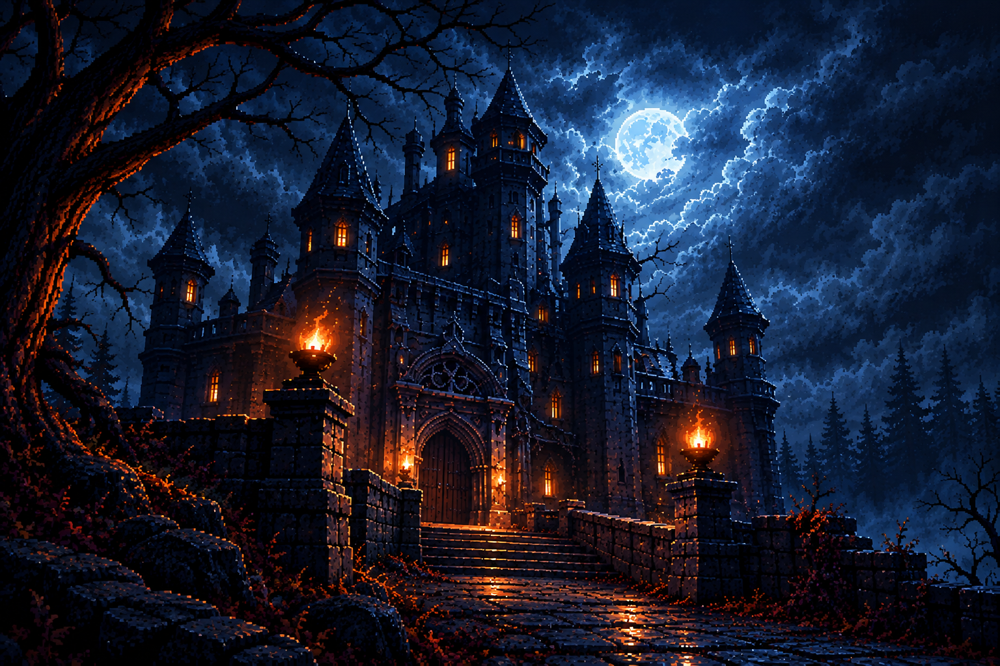

Bem-vindo ao site oficial do jogo "O Enigma do Castelo Assombrado: A Maldição da Lua Cheia". Prepare-se para uma aventura emocionante, cheia de mistérios e desafios que testarão sua inteligência e coragem.
Sob a luz fria e hipnótica de uma lua cheia que rasga as nuvens densas da noite, ergue-se o sinistro castelo gótico. Cercado por uma floresta sombria de pinheiros e árvores secas de galhos retorcidos, o local respira uma aura ancestral de mistério e desgraça. O único acesso ao portal principal é uma ponte de pedras centenárias, ladeada por pilares onde tochas ardem com chamas alaranjadas e inquietas. Atraído por uma força sobrenatural, você atravessa o caminho pavimentado. No momento em que cruza a entrada do castelo — cujas janelas altas e pontiagudas emitem um brilho âmbar misterioso em meio à escuridão —, as pesadas portas de madeira se fecham com um baque ensurdecedor. Uma voz espectral ecoa pelas paredes: o ritual da lua cheia começou, e você tem até o amanhecer para cruzar as cinco fases da fortaleza assombrada e escapar, ou sua alma pertencerá ao castelo para sempre.